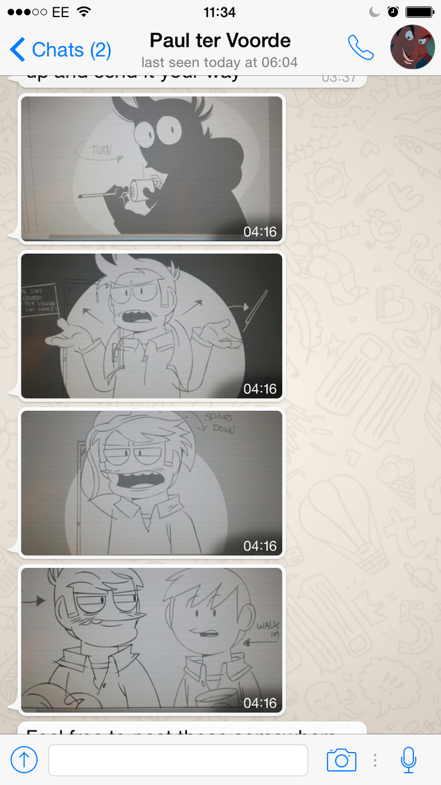

It’s #ThrowbackThursday so let’s all take a moment to remember when @thetomska hatched a plan to counter the leaked footage from The End by asking @paultervoorde to draw some fake screenshots and enlisting the help of @tomee-bear to “leak” them ;D